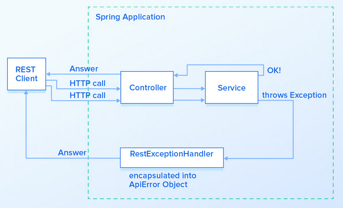
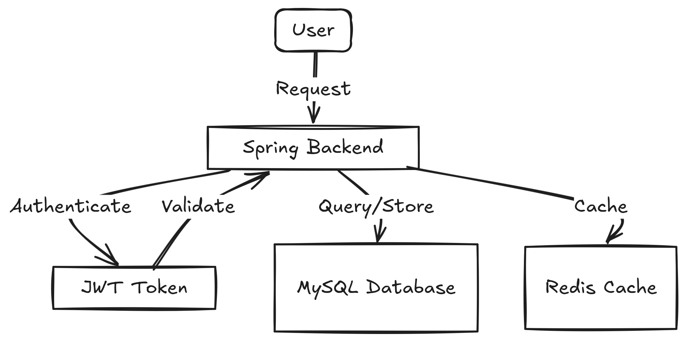
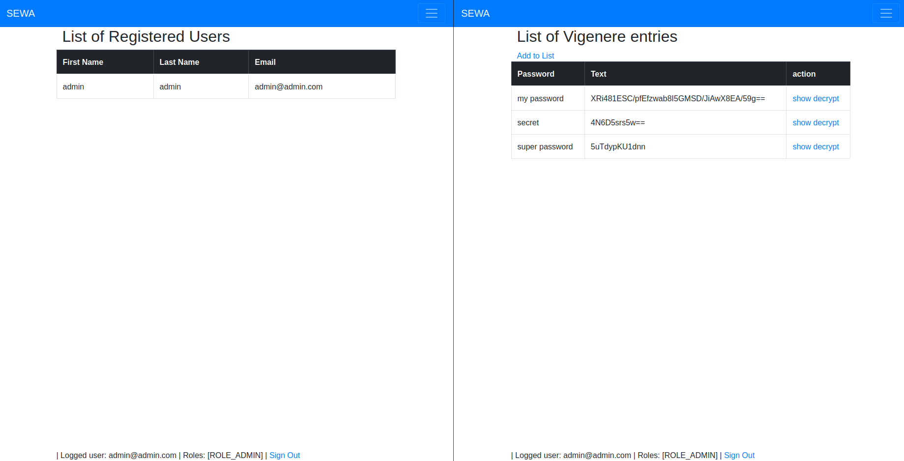
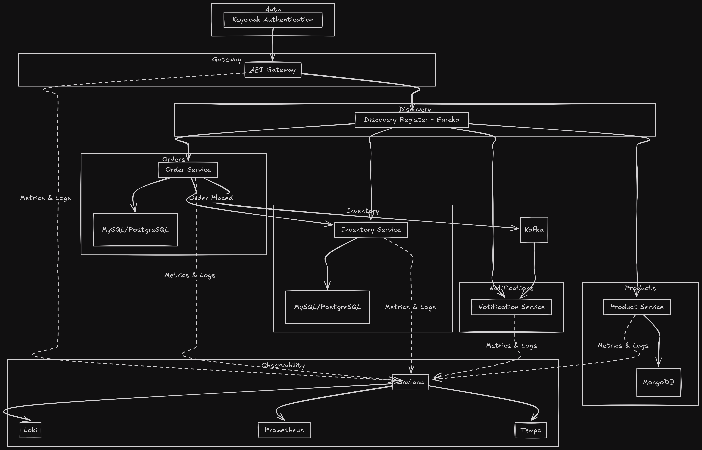
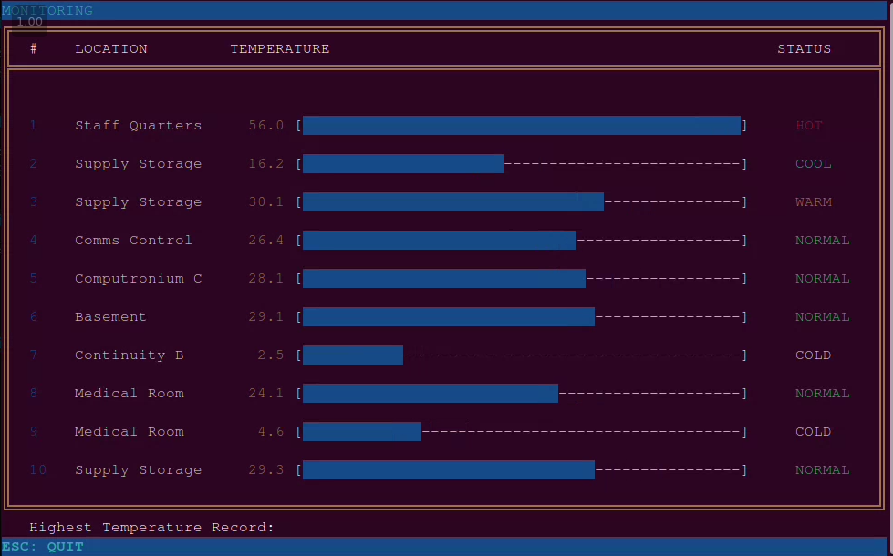
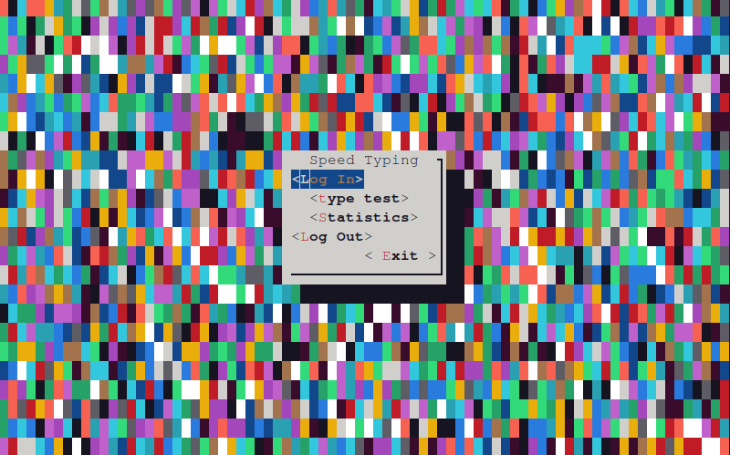

Nazar Zhuhan
SOC Analyst | Security Operations | Security Engineering
I investigate security events across endpoint, network, identity, cloud, and application environments. I analyze and correlate telemetry, develop detection logic, and build tooling to support threat investigation and security operations.
About Me Skills
Security Operations
- Incident Investigation
- Threat Analysis
- Detection Development & Tuning
- Log Analysis
- SIEM
- Endpoint Security
SIEM / Detection
- Elastic Security
- Kibana
- ES|QL
- KQL
- Microsoft Sentinel
- QRadar / AQL
Endpoint / Cloud Security
- Microsoft Defender XDR
- Defender for Endpoint
- Cortex XDR
- Wiz
- AWS / CloudTrail
- Azure / Entra ID
Network Security
- Palo Alto
- Check Point
- Fortinet
Engineering / Automation
- Python
- Java
- Spring Boot
- Docker
- Ansible
- Git
- Linux / auditd
- Kafka
A bit about me
I am a SOC Analyst with approximately 1.5 years of professional experience investigating security alerts and incidents. My work spans endpoint telemetry, network activity, identity and access management (IAM), cloud services, and application logs.
I use SIEM and XDR platforms to correlate events, assess suspicious activity, and document findings. I also develop and tune detection logic to improve security monitoring and investigation.
My software engineering background helps me understand the applications and infrastructure behind the telemetry. Java, Spring Boot, Python, Docker, Kafka, and Ansible support my work on security tooling, automation, and reproducible investigation environments.
I hold a bachelor's degree in Cyber Security Engineering from Tallinn University of Technology, completed cum laude.
Security & Engineering Projects
Featured · Security analytics
Security Analytics & Threat Investigation Lab – Elastic SIEM
Built a reproducible Elastic SIEM lab with Python preprocessing and normalization, plus Filebeat ingestion of endpoint, network, DNS, process, VPN, breach-exposure, and threat-intelligence datasets.
- ES|QL investigations, cross-source event correlation, and process-tree reconstruction.
- IOC analysis, VPN risk analysis, and breached-credential exposure analysis.
- Elasticsearch ingest pipelines and index mappings with GeoIP/ASN enrichment.
- Threat-intelligence API enrichment using VirusTotal, AbuseIPDB, and IPinfo.
Python · Filebeat · Elasticsearch · Kibana · Docker
View on GitHub →Infrastructure security
Security Infrastructure as Code
Ansible infrastructure project focused on security, high availability, and scalability, with service-level objectives and an incident response procedure.
Ansible · Linux · Infrastructure as Code
View on GitHub →
Application security
CashCards API
Spring API with role-based authentication and authorization, database migrations, and test-driven development.
Java · Spring · MySQL · Docker
View on GitHub →
Application security
JWT Authentication & Authorization
Stateless registration and login APIs with JWT authentication, authorization, and token revocation.
Spring · MySQL · Redis
View on GitHub →
Cryptography learning project
CipherNotes
A web application for exploring Caesar and Vigenère ciphers, with a dictionary interface for storing cipher data.
Spring · H2 · Thymeleaf
View on GitHub →
Engineering background
Order Service – Spring Boot
Order-processing microservice with Kafka messaging, centralized logs, metrics and tracing, and containerized deployment.
Java · Spring Boot · Docker · Kafka · Grafana
View on GitHub →
Engineering background
Monitoring Simulator
Java sensor simulation with concurrent data processing and a terminal interface for observing temperature readings.
Java · Lanterna
View on GitHub →
Engineering background
Speed Typing
Console typing application with user authentication, persistent statistics, and CSV export.
Java · Lanterna · HSQLDB
View on GitHub →